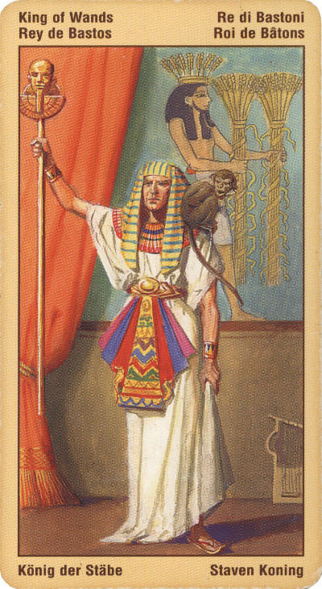

Король Жезлов
Умный руководитель, добрый отец семейства, надежный партнер. Это - человек, достигший многого, умеющий трезво оценивать свои возможности и точно знающий, к чему приведут те или иные его усилил. Достигнутое его не удовлетворяете он хочет большего, ибо боится, что, не стремясь к большему, потеряет и то, что имеет. Когда в его жизни завершается какая-то битва, он тут же начи¬нает новую.
Король Жезлов - это человек, который идеально подходит для руководства организацией. Он способен проявлять проницательность и дальновидность и вдохновлять других на сотрудничество с ним, заражая их своим энтузиазмом и оптимизмом.
Сильная воля помогает ему последовательно и методично строить карьеру, хотя энергичная натура, которая не терпит повседневной рутины и любит принимать вызовы судьбы нередко приводит к тому, что он все бросает и устремляется навстречу новым приключениям.
Если данная карта не указывает на человека, то она может свидетельствовать о каком-то неожиданно привалившем счастье или о переговорах, в особенности о каких-то финансовых договоренностях касательно женитьбы или развода. В качестве альтернативы она может относиться к разделу совместно нажитого имущества, к благотворительным учреждениям, трастовым соглашениям или к финансированию проектов в сфере искусства.
Это - олицетворение безграничной веры в себя, любви к жизни и ее радостям: богатству, власти, величию. Причем эти качества не эгоистичны в примитивном смысле этого слова, это не самодовольство и не корысть: такой человек щедр и великодушен со всеми, кто его окружает. Таким образом, эта карта выражает волю, уверенность в своих силах, стремление не столько к материальному, сколько к духовному росту, к полной реализации и раскрытию собственной личности. Лишь в отдельных случаях, когда эти качества переходят в крайности, они могут выразиться в самолюбовании, самовозвеличении, тщеславии и хвастовстве.
Упрямство, гордыня, фанатизм, аферы, порожденные страстью и приносящие несчастье.
Король Жезлов при гадании обычно указывает на то, что интересующая вас ситуация в значительной степени будет зависеть от человека, старше вас по возрасту, положению или просто жизненному опыту.
Как правило, Король Жезлов символизирует покровителя, то есть человека, настроенного к вам благожелательно и готового по мере сил помочь разобраться в ваших проблемах. Делает ли он это бескорыстно - другой вопрос. Во всяком случае, если видите,
что вам весьма охотно идут навстречу, предлагая даже больше, чем вы просите, не грех задуматься: откуда такое благоволение?
Присмотритесь повнимательнее к этому человеку, и если поймете, что можете ему доверять, поблагодарите судьбу за такую заботу: ведь с помощью Короля Жезлов вы сумеете реализовать многие из ваших талантов и способностей!
В перевернутом положении – безрассудство, ложное честолюбие, неблагоприятное известие. Это человек, который проводит свои идеи слишком уж настойчиво, не считаясь с людьми и ситуацией.
Время переходить к действиям еще не пришло. Надо ждать.
В отрицательном значении:мужчина сурового нрава,никогда не поможет просто так, но не будет и мешать. Забрасывание семьи или любимых ради дел.